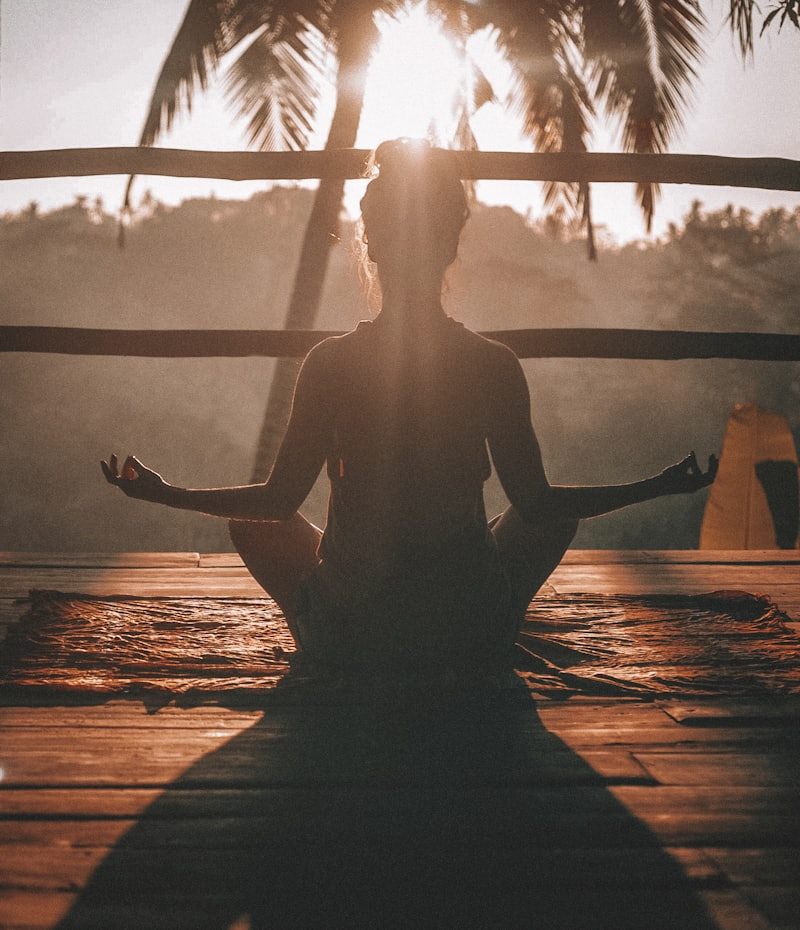

You don't have to carry this alone.
तपाईं एक्लो हुनुहुन्न।
Feeling low, anxious, or hopeless is common — and treatable. Talk to a trained counsellor online, check in with yourself gently, or call a free helpline right now. Reaching out is a sign of strength, not weakness.
This is an academic prototype built as part of the Baglung IUDP web atlas. Counsellors shown are illustrative, consultations are simulated, and nothing here replaces professional care. All helpline numbers listed on this page are real.
Small steps that help right now · साना कदम
These techniques don't replace professional care, but they can help you get through a difficult moment — and they work alongside any counselling you may seek.
5-4-3-2-1 Grounding · जमिनमा फर्कने
Spiralling thoughts? Anchor yourself in the present — count down with your senses.
Say each one out loud if you can — it helps.

Breathe 4 · hold · 6 · सास
Longer breaths out calm the body's alarm system. Two minutes is enough.
Mind wanders? Fine — just return to the count.
Four small wins today · चार साना जित
Depression makes everything feel heavier than it is. That feeling can change with support.
Myth ✗ / Fact ✓ · भ्रम र तथ्य
Help a friend in 3 steps · साथीलाई सहयोग

Read more, from trusted sources · थप अध्ययन
Stories of hope and recovery help — never stories of methods.
Photos: Unsplash (free licence)
What to expect · के हुन्छ?
What actually happens in a first counselling session?
Do I need to turn my camera on for a video session?
Is what I say kept private?
Does this self-check give a diagnosis?
I'm worried about cost and distance.
Why does this page exist on an urban planning site?
Every number here is real · यी नम्बरहरू साँचो हुन्
Trained counsellors answer these lines. Calling is confidential, and you don't need to be "sick enough" to deserve support.